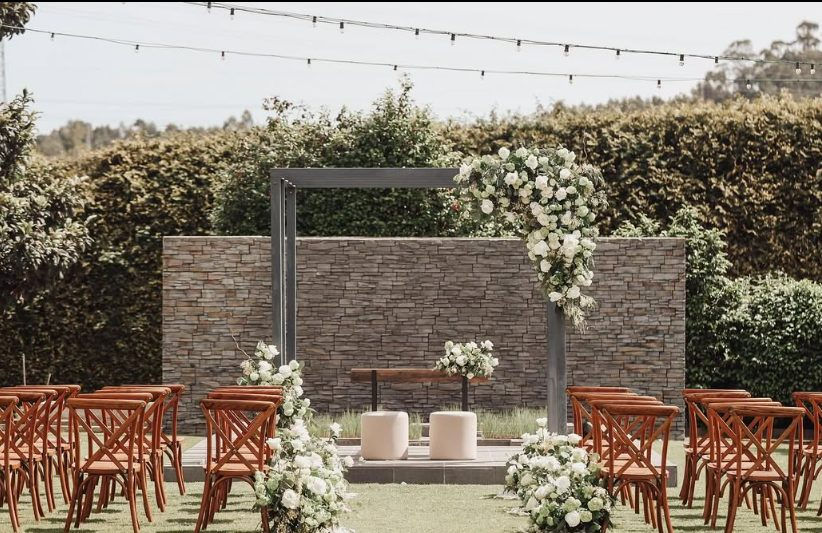
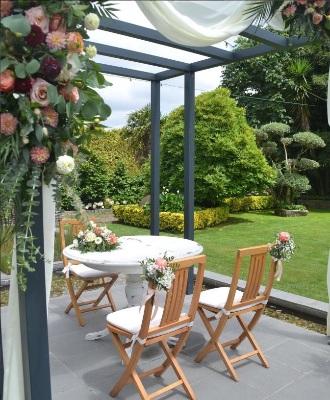
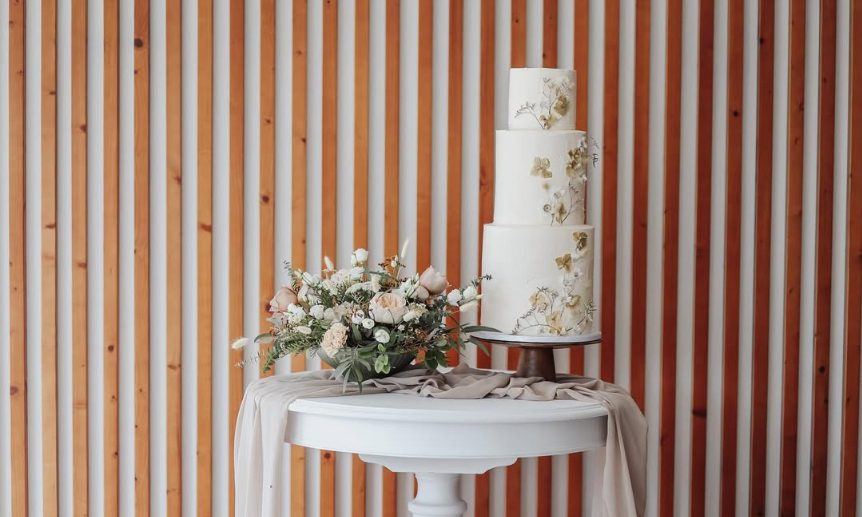
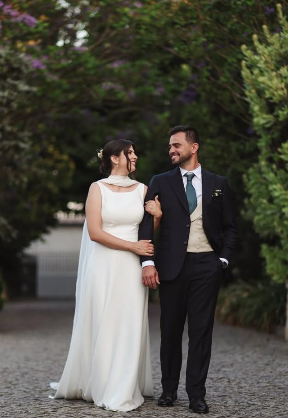
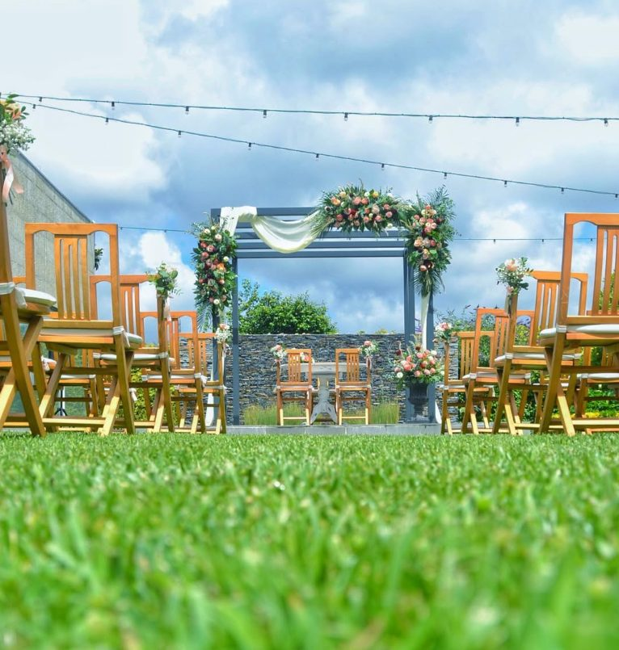

Casamentos na Quinta do Geraldino
Um casamento merece mais do que um espaço bonito. Merece um cenário onde cada momento encontre o seu lugar. Na Quinta do Geraldino, na Maia, jardins, ambientes interiores e uma experiência dedicada à organização de eventos criam o enquadramento para celebrar o vosso dia com elegância e tranquilidade.
Marcar uma visitaDo primeiro "sim" ao último brinde.

Cerimónia
Um espaço ao ar livre pensado para o momento mais importante do dia.

Receção
Um ambiente aberto para receber os convidados logo após a cerimónia.

Banquete
Um espaço interior preparado para o jantar e os momentos à mesa.
Festa
A noite continua num ambiente pensado para celebrar até tarde.

Momentos reais, na Quinta.
[ CONTEÚDO VISUAL NECESSÁRIO — fotografias de casamentos reais realizados na Quinta, com autorização dos noivos/fotógrafo para publicação. ]
52 casais. 5,0 em 5. 100% recomendam.
[ TESTEMUNHO — necessária autorização/confirmação do cliente antes de publicar uma citação real ]
Perguntas frequentes sobre casamentos
Qual é a capacidade da Quinta para casamentos?
[ CAPACIDADE A CONFIRMAR COM A QUINTA ]
É possível realizar a cerimónia civil no espaço?
[ SERVIÇO A CONFIRMAR COM A QUINTA ]
A Quinta realiza apenas um casamento por dia?
[ A CONFIRMAR COM A QUINTA ]
Como podemos visitar a Quinta?
Preencha o formulário de contacto com a data pretendida e entraremos em contacto para combinar a visita.
